Como a equipe da Zinga trabalha com Claude e Claude Code: pasta organizada, projeto com memória, tarefas em paralelo, versionamento no GitHub e entrega na identidade da marca.
Baseado nos vídeos de Eli Rigobeli (novo Claude) e Bruno Camargo (segundo cérebro), no Manual Operacional do Notion e em prints reais do app da Zinga.
Como ler este guia
Cinco partes, do primeiro clique ao GitHub.
Cada tela vem com um print real do app da Zinga e a explicação de cada botão. Onde não há print, uma ilustração marcada como tal mostra a ideia. Nomes de menu podem mudar com atualizações do app.
Antes de pedir qualquer coisa, saber onde fica cada botão. Esta parte é a visita guiada.
1.1 · Tela inicial
A casa do Claude
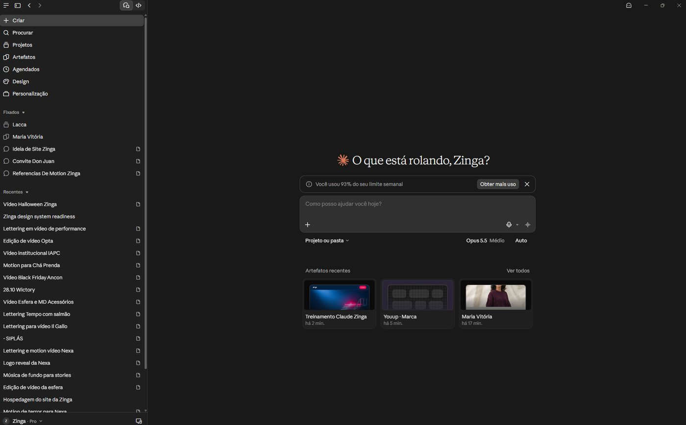
Print 01
Criar: começa uma conversa nova.
Procurar: busca em todas as conversas antigas.
Projetos: espaços com arquivos e instruções fixas (ver 2.1).
Artefatos: tudo que o Claude entregou em página: sites, apresentações, documentos.
Agendados: as rotinas, tarefas que rodam sozinhas (ver 3.6).
Design: peças visuais e design systems.
Personalização: skills, conectores e preferências.
Fixados e Recentes: conversas. Fixe as que você volta sempre.
Os dois ícones no topo da barra alternam entre o modo conversa e o modo Code.
1.2 · Barra lateral no modo Code
Conversas organizadas por lugar
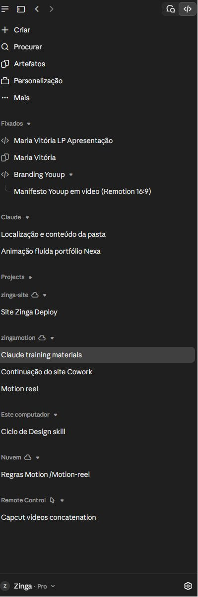
Print 02b
No modo Code, as conversas se agrupam pelo lugar onde o Claude trabalhou. Isso mostra de cara se uma tarefa mexeu no seu computador ou na nuvem.
Fixados: conversas e artefatos que você marcou.
Projects: um grupo por repositório do GitHub (zinga-site, zingamotion). A nuvem ao lado do nome indica que roda nos servidores do Claude.
Este computador: tarefas que mexeram em pastas da sua máquina.
Nuvem: tarefas que rodaram fora do seu computador.
Remote Control: sessões controladas pelo celular ou por outro computador.
Zinga · Pro no rodapé: a conta e o plano.
1.3 · Modelos
Qual cérebro usar em cada tarefa
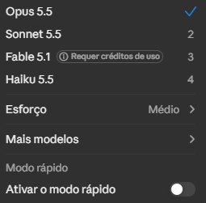
Print 31 · fica embaixo da caixa de mensagem
Opus: o mais capaz no dia a dia. Use em estratégia, textos importantes, código e tarefas longas.
Sonnet: rápido e mais econômico. Bom para revisões, resumos e tarefas repetitivas. Gasta menos limite.
Fable: o mais avançado, e só funciona com créditos de uso, que são pagos à parte. Use só quando o Opus não der conta.
Haiku: o mais leve. Tarefas simples e em volume, como classificar ou renomear.
Esforço: quanto o modelo pensa antes de responder. Médio é o padrão. Alto pensa mais, demora mais e gasta mais limite.
Modo rápido: resposta mais veloz no mesmo modelo, consumindo o limite mais depressa. Deixe desligado.
Regra prática: comece com Sonnet. Se a resposta ficar rasa, refaça com Opus.
1.4 · Modos de permissão
Quanta liberdade o Claude tem
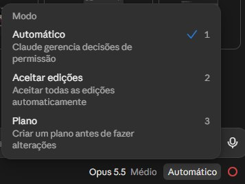
Print 09 · botão ao lado do modelo
Quando o Claude trabalha numa pasta, ele lê, cria e altera arquivos. O modo decide quando ele pergunta antes.
Automático: o Claude decide sozinho o que é seguro fazer e só pergunta no que é arriscado. É o padrão.
Aceitar edições: edita arquivos sem perguntar. Use só em pasta com GitHub, onde tudo pode ser desfeito.
Plano: não mexe em nada. Pesquisa, monta um plano e espera você aprovar. Use em toda tarefa grande ou nova.
Atalho: as teclas 1, 2 e 3 trocam o modo com o menu aberto.
1.5 · Uso e limite
O plano tem cota, e ela acaba
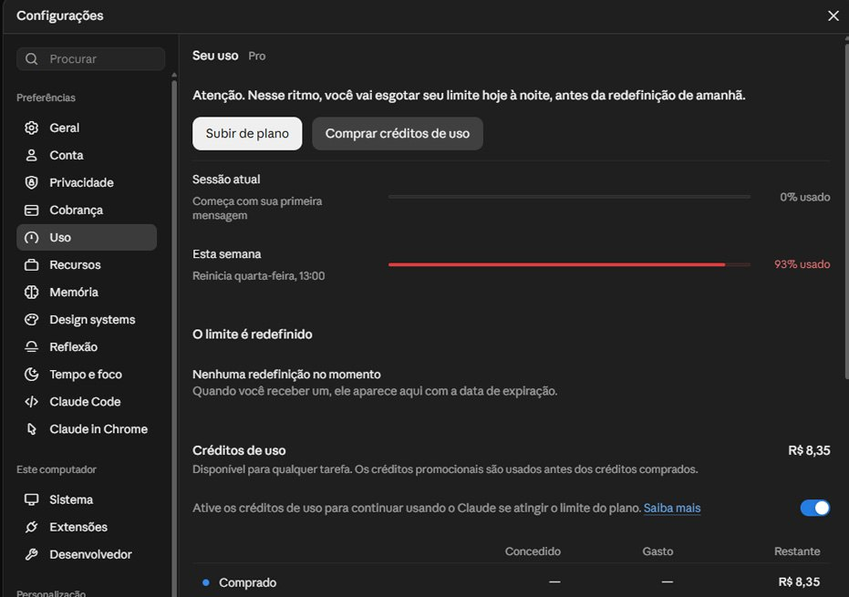
Print 32 · Configurações → Uso
Sessão atual: uma cota curta, que renova algumas horas depois da primeira mensagem.
Esta semana: a cota da semana. A barra fica vermelha perto do fim e mostra quando reinicia.
Créditos de uso: saldo em reais para continuar depois que a cota acaba. Com a chave ligada, o Claude passa a gastar esse saldo sozinho.
Subir de plano: troca para um plano com cota maior.
O que mais consome: modelo Opus, esforço alto, conversas muito longas e anexos pesados. Para economizar, use Sonnet no simples, comece conversa nova a cada tarefa e não reenvie o mesmo arquivo.
2.
Parte 2
Onde o Claude trabalha.
O Claude só enxerga o que você dá a ele: um projeto, uma pasta do computador ou um repositório. Escolher bem esse lugar é metade do resultado.
2.1 · Projeto ou pasta
Diga ao Claude em que cliente você está
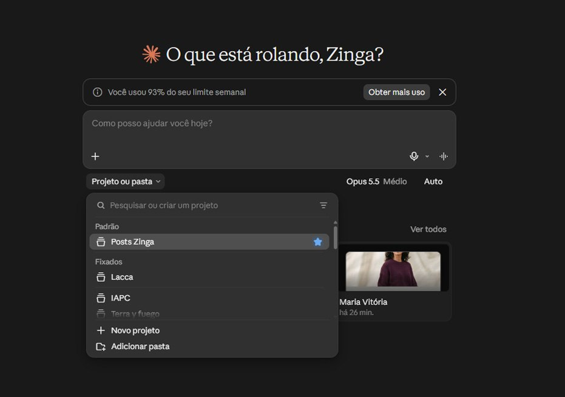
Print 03 · embaixo da caixa de mensagem
Projeto: um espaço no Claude com instruções e arquivos fixos. Tudo que você conversa dentro dele já sabe quem é o cliente.
Padrão (estrela): o projeto que abre sempre. Na Zinga, hoje é o Posts Zinga.
Fixados: os projetos mais usados (Lacca, IAPC, Terra y Fuego).
Novo projeto: cria um espaço para um cliente novo.
Adicionar pasta: conecta uma pasta do computador. O Claude passa a ler e salvar arquivos nela.
Regra da casa: um cliente, um projeto, uma pasta. Nunca conecte a Área de Trabalho inteira.
2.2 · Ambientes do Code
No seu computador ou na nuvem
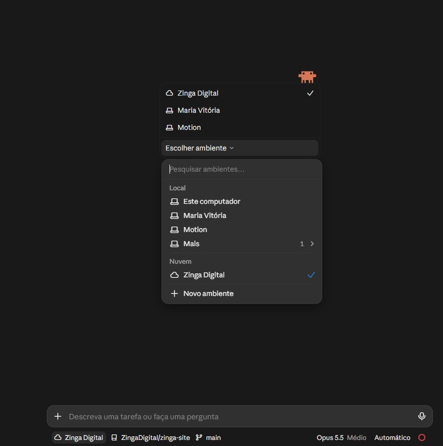
Print 03b · modo Code, antes de começar uma tarefa
Local · Este computador: o Claude trabalha nos seus arquivos. Rápido, mas para se o computador desligar.
Local · Maria Vitória, Motion: pastas específicas cadastradas como ambiente.
Nuvem · Zinga Digital: o Claude trabalha num computador da Anthropic, em cima de um repositório do GitHub. Continua mesmo com o seu notebook fechado.
Barra de baixo: mostra o ambiente, o repositório (ZingaDigital/zinga-site) e o branch (main) da tarefa.
Novo ambiente: cadastra outra pasta ou outra configuração de nuvem.
Quando usar a nuvem: tarefa longa, projeto que já está no GitHub ou trabalho que você quer acompanhar pelo celular.
2.3 · Barra de sessões e saídas
O painel de cada tarefa e onde ficam os arquivos
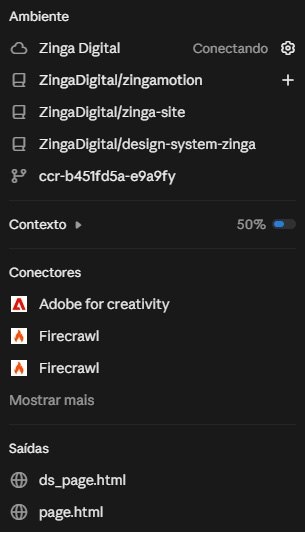
Print 04 · ícone no topo da conversa
Ambiente: onde a tarefa roda e quais repositórios e branch estão ligados. Neste print, a nuvem Zinga Digital com três repositórios da agência.
Contexto: quanto da memória da conversa já foi usado (aqui, 50%). Perto de 100%, o Claude resume a conversa para continuar e alguns detalhes se perdem.
Conectores: os apps que esta conversa pode usar.
Saídas: os arquivos que o Claude criou nesta conversa. Clique para abrir ou baixar.
Onde o arquivo vai parar: numa pasta conectada, ele é salvo direto nela (na Zinga, em output/). Numa conversa sem pasta, ele fica em Saídas e você baixa. Peça sempre: “salve em output com o nome cliente-peça-data”.
2.4 · Estrutura de pastas da Zinga
Como montamos a pasta de cada cliente
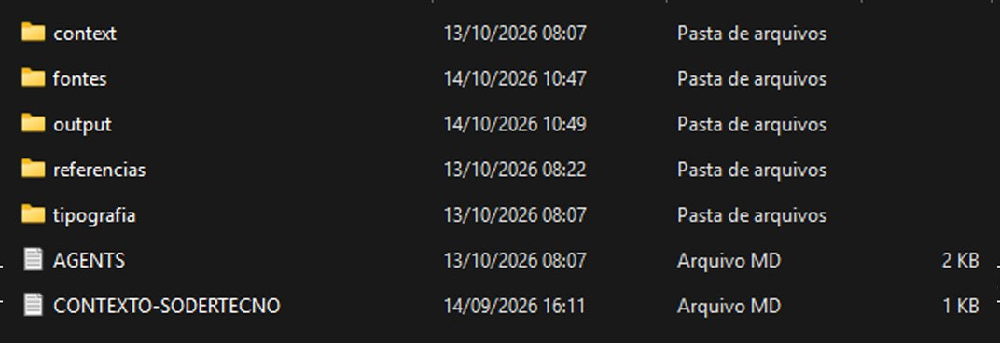
Print 02 · pasta real do cliente Sodertecno
context/: briefing, atas, decisões e histórico. É a memória do cliente.
fontes/: arquivos de fonte da marca do cliente.
output/: tudo que o Claude entrega. Nada de entrega solta pela pasta.
referencias/: referências visuais, concorrentes e moodboard.
tipografia/: regras e testes de tipografia.
AGENTS.md: o manual da pasta, que a IA lê antes de qualquer coisa.
CONTEXTO-CLIENTE.md: o resumo de quem é o cliente.
clientes/
└── nome-do-cliente/
├── CLAUDE.md# uma linha: @AGENTS.md
├── AGENTS.md# manual da pasta (seções A a G)
├── CONTEXTO-CLIENTE.md# quem é o cliente, em 1 página
├── context/
│ ├── briefing.md # original, não se edita
│ ├── estrategia-atual.md # muda a cada mês
│ ├── decisoes.md # o que já foi decidido e por quê
│ ├── proximas-acoes.md
│ └── sessoes/ # resumo datado de cada conversa
├── referencias/
├── fontes/
├── tipografia/
└── output/
└── 2026-11-04-post-lancamento.png
As pastas são o padrão que a Zinga já usa. O que esta versão acrescenta é o conteúdo do context/, tirado do Manual Operacional do Notion: briefing congelado, estratégia atual, decisões, próximas ações e resumos de sessão.
Por que existe um CLAUDE.md com uma linha só. O Claude Code lê automaticamente o arquivo CLAUDE.md. O AGENTS.md é o padrão de outras IAs, como Codex e Cursor. Um CLAUDE.md com a linha @AGENTS.md faz o Claude ler o manual sem duplicar texto.
Nomes: minúsculas, sem acento, palavras com hífen e datas em AAAA-MM-DD, que ordenam sozinhas.
Proposta, não regra ainda: o conteúdo de context/ e o CLAUDE.md de uma linha precisam da aprovação da equipe.
2.5 · O manual da pasta
As sete seções do AGENTS.md
O Manual Operacional do Notion define o que todo manual de pasta precisa responder. Mantenha abaixo de 200 linhas, atualize a data sempre que editar e escreva TBD no que ainda não souber.
A.
O que é esta pasta
Função da pasta em um parágrafo e em que etapa o projeto está.
B.
O objetivo
Por que existe, como saber que está pronto e o que fica fora.
Uma linha por decisão: data, o que e por quê. Evita rediscutir.
E.
Mapa de memória
O que existe em cada arquivo de context/. Sem esse mapa, o Claude não abre a memória.
F.
Referências
Onde mais o projeto existe: Drive, Notion, repositório, site.
G, opcional: regras só deste cliente, como paleta própria, dados sensíveis ou tom diferente do padrão da Zinga.
2.6 · Segundo cérebro
Uma memória que nenhuma IA leva embora
Segundo cérebro é só uma pasta de arquivos de texto que guarda o que a agência sabe. Como são arquivos comuns, qualquer IA consegue ler: se amanhã surgir outra ferramenta, o conhecimento continua com a Zinga. A ideia vem do Manual do Notion e do vídeo do Bruno Camargo, “Como construir um segundo cérebro”.
1.
Pessoal
~/.claude/CLAUDE.md no computador de cada um. Quem você é, como escreve, seu tom. Vale para todas as pastas.
2.
Agência
Um repositório da Zinga com um mapa.md (o índice que a IA lê primeiro), a marca, os processos, as skills e a lista de clientes. Os repositórios design-system-zinga e zinga-site já são pedaços dele.
3.
Cliente
A pasta de cada cliente da seção 2.4, com AGENTS.md e context/.
Como manter vivo
No fim de cada conversa importante, peça: “salve um resumo desta sessão em context/sessoes”.
Decisão tomada vira uma linha em decisoes.md.
Uma vez por semana, peça para atualizar estrategia-atual.md e proximas-acoes.md.
Próximos degraus (não agora)
Degrau 2: um servidor alugado (cerca de R$ 30 a 50 por mês) com uma ferramenta de busca nos arquivos, como o GBrain.
Degrau 3: memória automática de preferências, como o Honcho, e coleta de WhatsApp e e-mail.
O degrau 3 mexe com dado de cliente e de terceiros. Só com política de LGPD antes.
2.7 · Cowork organiza o computador
Pasta bagunçada vira pasta no padrão
Com uma pasta conectada, o Claude consegue renomear, mover e separar arquivos. É o jeito mais rápido de colocar clientes antigos no padrão da seção 2.4. Ele sempre mostra o plano antes de mexer, e você aprova.
Ilustração · antes
Downloads/
IMG_4471.png
logo final FINAL v3.ai
briefing cliente (1).pdf
post lacca novembro.psd
Captura de tela 2026-10-02.png
fonte-marca.otf
orçamento lacca.xlsx
post lacca novembro (2).psd
Ilustração · depois
clientes/lacca/AGENTS.mdcontext/ briefing.pdf · orcamento.xlsx
fontes/ fonte-marca.otf
referencias/ captura-2026-10-02.png
output/ 2026-11-post-novembro.psd
# duplicado “(2)” movido para revisar/# logo enviado para revisar/ (de qual cliente?)
Peça assim: “Organize a pasta Downloads. Mova o que for da Lacca para clientes/lacca no padrão da Zinga, renomeie sem acento e com data, e mande para revisar/ o que você não souber de quem é. Mostre o plano antes de mover qualquer arquivo.”
3.
Parte 3
Turbinando o Claude.
Sozinho, o Claude conversa. Com skills ele trabalha do jeito da casa, e com conectores ele mexe nas ferramentas da agência.
3.1 · O botão +
Tudo que dá para colocar numa conversa
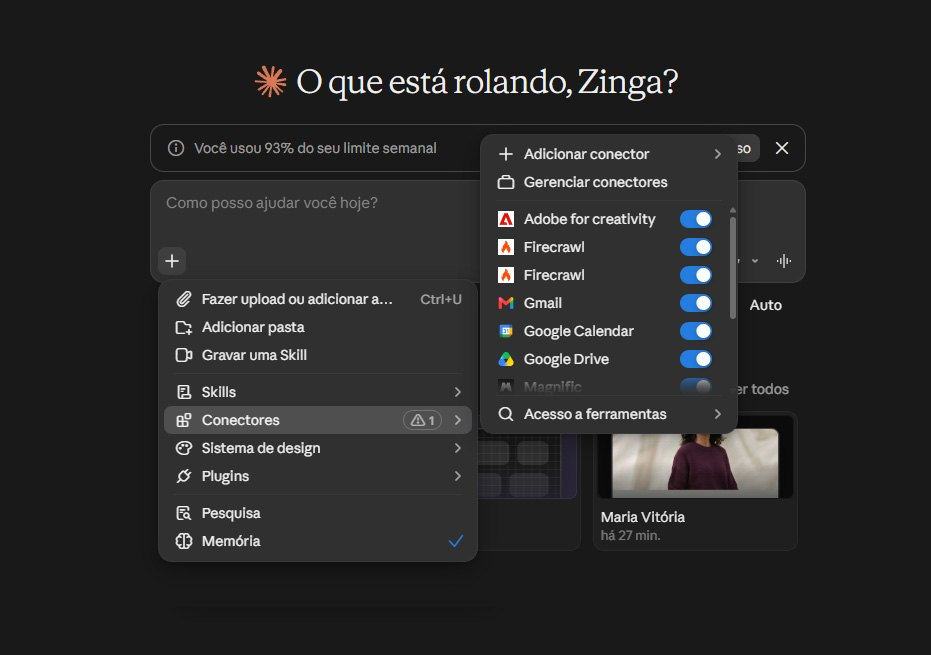
Print 13 · o + no canto da caixa de mensagem
Fazer upload: anexa arquivos (Ctrl + U).
Adicionar pasta: conecta uma pasta do computador.
Gravar uma Skill: você grava a tela fazendo uma tarefa e o Claude transforma em skill.
Skills: escolhe uma skill para esta conversa (3.2).
Conectores: liga e desliga apps nesta conversa. O triângulo com “1” avisa que um conector precisa de atenção.
Sistema de design: aplica a identidade da Zinga ao que for criado (3.5).
Plugins: pacotes prontos que juntam skills, conectores e comandos.
Pesquisa: modo de pesquisa profunda, que consulta várias fontes e entrega um relatório.
Memória: com o check, o Claude lembra de conversas anteriores.
3.2 · Skills
O jeito Zinga, guardado e reutilizável
Skill é um pacote de instruções que ensina o Claude a fazer uma tarefa do jeito da casa. Em vez de colar o mesmo prompt gigante toda vez, você chama a skill. O Claude também chama sozinho quando percebe que o pedido combina com ela.
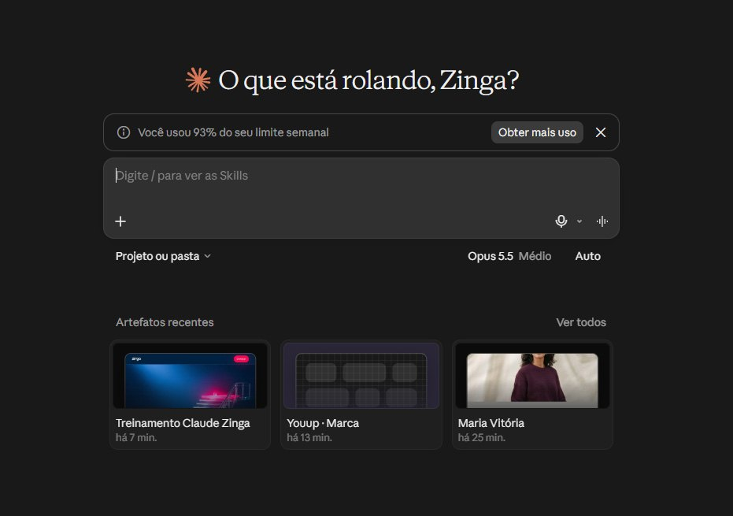
Print 10 · chamar pelo teclado
Digite / na caixa de mensagem e a lista de skills aparece. Escolha uma e escreva o pedido na frente.
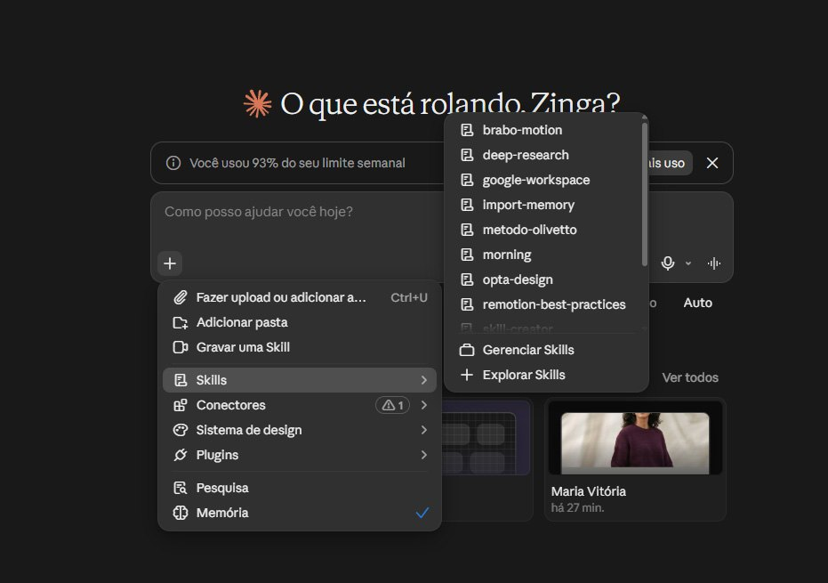
Print 11b · chamar pelo menu
No + → Skills aparecem as da Zinga, como brabo-motion, metodo-olivetto e opta-design, mais “Gerenciar Skills” e “Explorar Skills”.
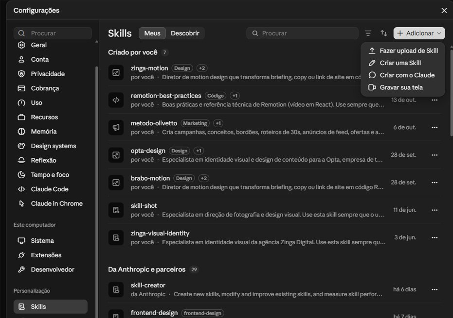
Print 11 · Configurações → Skills
Criado por você: as sete skills da Zinga. zinga-motion e brabo-motion fazem motion, metodo-olivetto faz campanhas, opta-design atende a Opta, skill-shot faz direção de foto, zinga-visual-identity guarda a identidade e remotion-best-practices é referência técnica de vídeo.
Da Anthropic e parceiros: skills prontas, como skill-creator (cria e melhora skills) e frontend-design.
Adicionar: fazer upload de uma skill pronta, criar escrevendo, criar conversando com o Claude ou gravar a tela.
Três pontinhos em cada skill: editar, desativar ou apagar.
Jeito mais fácil de criar: “Criar com o Claude”. Explique a tarefa como explicaria para um estagiário novo, mostre um exemplo bom e um ruim, e ele monta a skill.
3.3 · Conectores e MCP
Ligar o Claude às ferramentas da agência
Conector é a ponte entre o Claude e outro app. Com o Google Drive ligado, ele lê um briefing direto da pasta. Com o Gmail, ele resume e-mails. Com o Magnific, ele gera imagens. MCP é o nome técnico do padrão que faz essas pontes funcionarem.
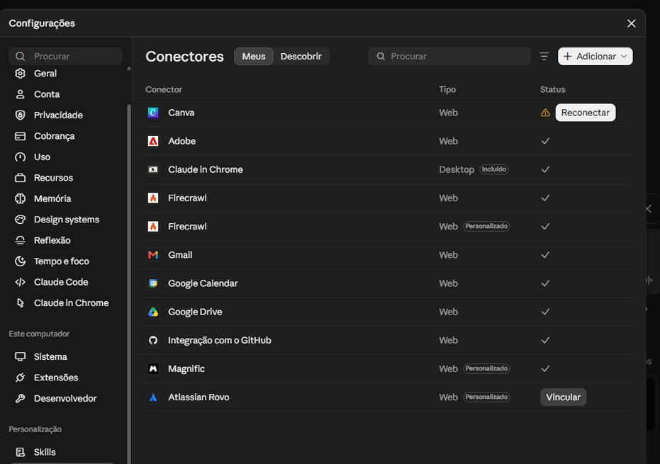
Print 12 · Configurações → Conectores
Meus e Descobrir: os que você já tem e o catálogo para adicionar.
Tipo Web: roda na nuvem e funciona em qualquer computador.
Tipo Desktop: roda no seu computador, como o Claude in Chrome (3.4).
Personalizado: adicionado por endereço (URL), quando a ferramenta não está no catálogo. Magnific e Firecrawl entraram assim.
Status ✓: funcionando. Reconectar: o login expirou, como no Canva. Clique e entre de novo. Vincular: ainda não conectado.
Como adicionar um conector novo
Configurações → Conectores → Adicionar.
Se a ferramenta está no catálogo (Descobrir), clique em conectar e faça login.
Se não está, procure no site da ferramenta a opção “MCP”, copie o endereço e cole em “Adicionar conector personalizado”.
Na primeira vez que o Claude usar, ele pede permissão. Escolha “sempre permitir” só para o que for de leitura.
Cuidados
Conector dá acesso ao que estiver na conta. Drive conectado é Drive inteiro visível para o Claude.
Conector personalizado de site desconhecido pode ler seus dados. Só adicione de empresa que vocês conhecem.
Quando aparecer o triângulo de aviso no +, abra Conectores e reconecte o que estiver pedindo.
3.4 · Navegadores
Quando o Claude precisa usar um site
Claude in Chrome é uma extensão do Google Chrome que deixa o Claude navegar por você: abrir páginas, clicar, preencher campos e ler o que aparece, usando os logins que você já tem no navegador. Aparece em Configurações (item “Claude in Chrome”) e na lista de conectores como “Desktop · Incluído”.
Para que serve na agência: conferir um post publicado, puxar dados de um painel que não tem conector, comparar preços de fornecedores, testar um site de cliente no ar.
Navegador do app: no aplicativo de computador, o Claude também abre páginas num painel ao lado da conversa, sem sair do app. A disponibilidade varia por plano e versão.
Cuidado: no Chrome ele age com os seus logins. Não peça para entrar em banco, pagamento ou conta de cliente sem você acompanhando a tela.
Ilustração
VocêAbra o Instagram da Lacca e me diga quais foram os 3 posts com mais comentários este mês.
ClaudeAbrindo instagram.com/lacca no Chrome… rolando o perfil… lendo comentários de 12 posts.
Zinga Cowork: o design system da agência. Marque antes de pedir apresentação, post ou página, e o Claude usa cores, fontes, logo, cards e ícones oficiais.
Gerenciar sistemas de design: abre a lista em Configurações para editar.
Novo design system: cria um para um cliente, a partir do logo e das cores ou de um site.
No Claude Code o mesmo design system está no repositório design-system-zinga. Este manual foi montado com ele.
3.6 · Rotinas
Tarefas que rodam sozinhas, no horário
Rotina é uma tarefa agendada: você escreve a instrução uma vez, escolhe quando ela roda, e o Claude executa sozinho e deixa o resultado numa conversa. Fica em Agendados, na barra lateral (print 01).
Ilustração
NomePendências da semana
QuandoToda segunda, 8h40
InstruçãoLeia meus e-mails e minha agenda da semana. Liste o que cada cliente está esperando de nós, com prazo, e o que está atrasado.
ConectoresGmail · Google Calendar
Criar rotina
Ideias para a agência
Segunda de manhã: pendências e prazos da semana por cliente.
Toda sexta: resumo do que foi entregue, para o relatório do cliente.
Todo dia 1º: lembrete de planejamento mensal de cada conta.
Diário: organizar a pasta Downloads no padrão da seção 2.7.
Atenção: rotina que usa pasta do computador só roda com o computador ligado e o app aberto. Cada execução gasta limite como uma conversa normal.
4.
Parte 4
Trabalho em paralelo.
Recursos do vídeo “Novo Claude: projetos, threads e sessões aninhadas na prática”, de Eli Rigobeli. O selo com horário leva ao trecho.
4.1 · Menu da conversa
Conversa lateral, tarefas em segundo plano e plano
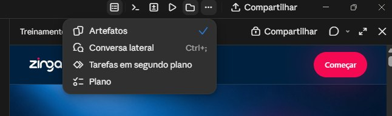
Print 24 · três pontinhos no topo da conversa
Artefatos: abre ao lado o que o Claude criou (página, apresentação, documento).
Conversa lateral (Ctrl + ;): uma cópia da conversa para perguntar algo sem atrapalhar o trabalho principal. O que você pergunta ali não entra na conversa original. ▶ 15:48
Tarefas em segundo plano: mostra os subagentes, ajudantes que o Claude cria para fazer partes do trabalho ao mesmo tempo, e o que cada um está fazendo.
Plano: mostra o passo a passo que o Claude montou e o que já foi feito.
Você pede várias tarefas de uma vez e o Claude abre uma conversa para cada uma, embaixo da principal. Cada uma faz sua parte sem lotar a memória da principal, e você pode entrar em qualquer uma para corrigir o rumo. Está sendo liberado aos poucos.
Uma conversa fixada que olha as outras e avisa o que está esperando decisão sua: “Você é minha sessão mestre. Quais conversas estão esperando uma decisão minha?”. Enxerga as 20 mais recentes, e não as da nuvem.
No modo Code, um projeto vira uma conversa contínua que abre uma thread para cada frente: site, conteúdo, lançamento. As threads trocam informação entre si e continuam na nuvem com o notebook fechado, desde que o projeto esteja no GitHub (parte 5). Em beta.
Arraste conversas para os lados para ver várias frentes ao mesmo tempo. Mods mudam a aparência do Claude Code, como um painel de progresso. Mod é código que roda no computador: nada de instalar mod baixado da internet sem revisão.
5.
Parte 5
GitHub do zero.
GitHub parece coisa de programador, mas a ideia é a mesma que a agência já usa com arte: guardar versões, trabalhar numa cópia sem estragar a original e pedir aprovação antes de publicar.
5.1 · A analogia
Cinco palavras, explicadas com um post
Termo
Com tradução do navegador
O que é, no dia a dia da agência
Repositório
Repositório
A pasta do projeto guardada no GitHub, com o histórico inteiro. Um por cliente ou projeto.
Commit
Comprometa-se
Salvar uma versão com um bilhete: “troquei o título do post para a versão aprovada”. Dá para voltar a qualquer commit, como o histórico de versões do Drive, só que você escolhe quando salvar e escreve o porquê.
Branch
Filial
Duplicar a prancheta para testar uma ideia sem mexer na arte aprovada. A versão oficial se chama main (“principal” na tradução).
Push
Empurrar
Enviar os commits do seu computador para o GitHub, como subir o arquivo para o Drive. Antes do push, só você vê.
Pull request
Solicitação de pull
Pedir aprovação: “olha o que mudei nesta cópia, posso juntar na versão oficial?”. Alguém revisa, comenta e aprova.
Merge
Mesclar
Juntar a cópia aprovada na versão oficial. No site da Zinga, o merge no main publica no ar.
Desligue a tradução automática do navegador no GitHub (ícone de tradução na barra de endereço → mostrar original). Os termos traduzidos confundem e não batem com o que o Claude escreve.
5.2 · O caminho de uma alteração
Do arquivo até a versão oficial
Ilustração
1.
Branch
“Crie uma branch post-novembro.” Abre a cópia de trabalho.
2.
Alterar
Você e o Claude trabalham nos arquivos normalmente.
3.
Commit
“Faça commit com uma descrição clara.” Salva a versão.
4.
Push
“Envie para o GitHub.” A equipe passa a ver.
5.
Pull request
“Abra um pull request.” Alguém revisa e faz o merge.
Você não precisa digitar comando nenhum. Todas essas frases são pedidos em português para o Claude, que executa e explica o que fez.
Cada linha é um repositório: zingamotion (skills de motion), design-system-zinga (a identidade), zinga-site (o site novo).
Public e Private: público qualquer pessoa vê. Privado, só quem foi convidado. Cliente é sempre privado.
Updated: quando houve o último push.
New (verde): cria um repositório novo.
Atenção: a conta tem dois repositórios de design system (zinga-designsystem e design-system-zinga). O oficial é o design-system-zinga. O outro deve ser arquivado para ninguém usar o errado.
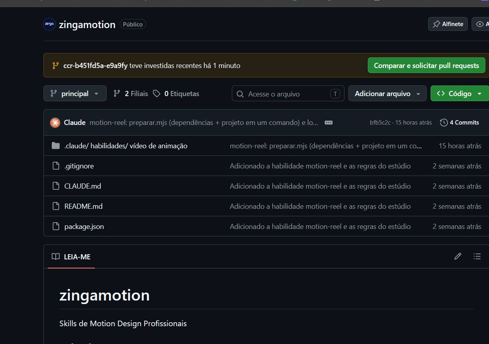
Print 15 · dentro de um repositório (com tradução ligada)
Faixa amarela: “ccr-… teve pushes recentes”. Uma branch recebeu alterações e o GitHub oferece o botão Compare & pull request (traduzido como “Comparar e solicitar pull requests”).
Seletor “main” (traduzido “principal”): troca a branch que você está vendo.
2 Branches (“2 Filiais”): quantas cópias de trabalho existem.
4 Commits: abre o histórico de versões. Clique num commit para ver em verde o que entrou e em vermelho o que saiu.
Lista de arquivos: cada linha mostra a descrição do último commit que mexeu nele e quando.
LEIA-ME: o README, a apresentação do repositório.
Abas do topo: Code (arquivos), Pull requests (pedidos de aprovação), Settings (configurações e acesso).
Ilustração · por dentro de um commit
Ajusta título do post de lançamento para a versão aprovada · Vinícius · 04/11 ## Post 1 · Lançamento- Título: A nova coleção chegou+ Título: Feita para quem não para Legenda: Conheça a coleção de verão.+ CTA: Link na bio
Vermelho é o que saiu, verde é o que entrou. É assim que se vê, meses depois, quem mudou o quê e por quê.
5.4 · Regras da casa
O que nunca fazer
senha e token
Nunca vão para o GitHub, nem em repositório privado. Se subiu por engano, troque a senha na hora: apagar o arquivo não apaga o histórico.
arquivo grande
O GitHub bloqueia arquivos acima de 100 MB. Vídeo bruto e PSD pesado ficam no Drive, com o link no AGENTS.md.
main
Ninguém trabalha direto nela. Toda mudança passa por branch e pull request.
repositório novo
Depois de criar, inclua na lista do app do Claude (claude.ai/connect-github), senão o Claude não enxerga.
.gitignore
Lista do que não sobe: senhas, arquivos .env, exportações pesadas. Peça ao Claude para criar.
dúvida
“O que mudou desde ontem?” e “Volte este arquivo para a versão de segunda” resolvem quase tudo.
Para quem conduz
Três encontros de 90 minutos.
Uma parte do guia por bloco, sempre com a tela do app aberta ao lado. Não passe tudo de uma vez.
Minutos
Conteúdo
Ao final, a pessoa sabe
Encontro 1 · Conhecendo o app e organizando
00–25
Parte 1: tela inicial, barra lateral, modelos, modos e limite
Onde fica cada coisa e qual modelo usar
25–60
Parte 2: projetos, pastas, ambientes, saídas e estrutura de pastas
Montar a pasta de um cliente no padrão
60–90
2.5 a 2.7: AGENTS.md, segundo cérebro e organização pelo Cowork
Escrever o manual de uma pasta
Encontro 2 · Turbinando e trabalhando em paralelo
00–30
3.1 e 3.2: botão + e skills
Chamar e criar uma skill
30–60
3.3 a 3.6: conectores, navegador, design system e rotinas
Conectar uma ferramenta e criar uma rotina
60–90
Parte 4: conversa lateral, subagentes e projetos com threads
Rodar tarefas ao mesmo tempo
Encontro 3 · GitHub e entrega
00–40
Parte 5: os seis termos, o caminho de uma alteração e as telas
Ler um repositório e um commit
40–70
Ao vivo: branch, commit, push e pull request pedidos ao Claude
Fazer o ciclo completo sem digitar comando
70–90
Cuidados e dúvidas
O que pode e o que não pode
Copiar e colar
Prompts prontos.
Troque o que estiver entre colchetes. Funcionam no app e no Claude Code.
2.5 · Manual da pasta (AGENTS.md)
# [Cliente] · AGENTS.md
Última atualização: [AAAA-MM-DD] · Responsável: [nome]
## A · O que é esta pasta
[Um parágrafo: o que existe aqui, quem trabalha, etapa do projeto.]
## B · O objetivo
- Por que existe: [problema que resolve]
- Como saber que está pronto: [estado de sucesso]
- Fora do escopo: [o que não fazemos aqui]
## C · Stack
[Ferramentas: Claude, Canva, Premiere, Magnific, Drive...]
## D · Decisões
- [AAAA-MM-DD] · [decisão] porque [motivo]
## E · Mapa de memória (context/)
- briefing.md · briefing original, não editar
- estrategia-atual.md · estado atual, atualizado todo mês
- decisoes.md · o porquê de cada decisão da seção D
- proximas-acoes.md · próximos passos
- sessoes/ · resumo datado de cada conversa
## F · Referências
[Drive, Notion, repositório, site do cliente]
## G · Regras deste cliente (opcional)
[Paleta própria, dados sensíveis, tom diferente do padrão Zinga]
2.6 · Salvar a sessão no segundo cérebro
Salve um resumo desta conversa em context/sessoes/ com o nome AAAA-MM-DD-[assunto].md. Estrutura: título, um resumo de uma linha, e as seções O que discutimos, O que decidimos e Próximos passos. Se alguma decisão nova surgiu, acrescente uma linha em context/decisoes.md.
2.7 · Organizar uma pasta
Organize a pasta [nome]. Mova os arquivos de cada cliente para clientes/[cliente] no padrão da Zinga (context, referencias, fontes, tipografia, output). Renomeie em minúsculas, sem acento, com data AAAA-MM-DD. O que você não souber de quem é, mande para revisar/. Mostre o plano completo antes de mover qualquer arquivo.
3.6 · Rotina de segunda-feira
Toda segunda às 8h40: leia meus e-mails e minha agenda da semana. Liste, por cliente, o que estão esperando de nós com prazo, o que está atrasado e as reuniões da semana. Termine com as 3 prioridades do dia.
5.2 · Ciclo completo no GitHub
Crie uma branch chamada [assunto] para esta tarefa. Quando terminar, faça commit com uma descrição clara do que mudou, envie para o GitHub e abra um pull request explicando a alteração em português simples. Não mexa direto no main.
Governança
Antes de levar pra equipe.
Limite
A cota acaba
O plano tem limite por sessão e por semana. Com os créditos de uso ligados, passar do limite gasta dinheiro sem novo aviso. Decidam quem pode ligar essa chave.
LGPD
Dado de cliente em conector
Conectar Drive, Gmail ou WhatsApp dá acesso a tudo que está lá. Definam quais pastas e contas podem ser usadas e evitem dado pessoal sem necessidade.
Compartilhamento
Link aberto é público
Artefato compartilhado “com qualquer pessoa com o link” pode circular. Material de cliente se compartilha só com quem precisa.
Segurança
Senha fora do Git, mod revisado
Token em repositório, mod baixado da internet e conector de site desconhecido são as portas de entrada mais comuns para problema.
Disponibilidade
Recurso novo muda de lugar
Sessões aninhadas, projetos com threads e navegador do app estão em liberação gradual e variam por plano. Se não aparecer, não é erro da pessoa.
Qualidade
A IA erra, alguém revisa
Toda entrega passa por revisão humana antes de ir pro cliente. Número, nome e resultado nunca são inventados.
Fim da trilha
A pessoa está pronta quando consegue:
Escolher modelo, modo e acompanhar o próprio limite de uso.
Abrir o projeto ou a pasta certa antes de pedir qualquer coisa.
Montar a pasta de um cliente no padrão, com AGENTS.md e context/.
Achar onde o Claude salvou um arquivo.
Chamar uma skill e conectar uma ferramenta.
Criar uma rotina que roda sozinha.
Explicar commit, branch, push e pull request com as próprias palavras.
Entregar uma peça no design system da Zinga com a permissão certa.